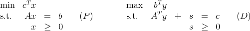
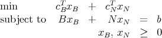
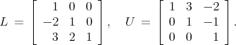
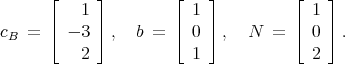
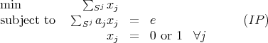
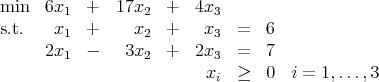
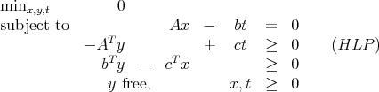

Midterm Exam, Tuesday, April 6, 2010.
Please do all three problems. Show all work. No books or calculators allowed. You may use any
result from class, the homeworks, or the texts, except where stated. You may use one sheet of
handwritten notes. The exam lasts 110 minutes.
Throughout, the standard primal-dual LP pair is

where A is m × n and the vectors are dimensioned appropriately.
- (30 points)
The linear program

has xB IR3, x
N IR1, b IR3, and c, B, and N dimensioned appropriately. The matrix B is
invertible, and matrices L and U are known with LB = U, and

Let

Solve the following questions without finding B explicitly.
- (10 points) Show that the basic feasible solution for basis B has xB = (3, 2, 4)T .
- (10 points) Use complementary slackness to show that the corresponding dual
solution is y = (7,-10,-2)T .
- (10 points) For what values of cN is this solution optimal?
- (30 points)
A set of exams {1,…,n} is to be given, with only one exam given at a time. Exam i has
duration li and a day has length L. An exam must start and finish on the same day. It is
desired to schedule the exams in as few days as possible. Let Sj ⊆{1,…,n} be a set of exams
that can be scheduled in a single day and let aj IRn be the incidence vector of this
set. Each set Sj must observe the restriction that no student sits more than one
exam in a single day. This restriction can be modeled using a set of pairs P of
exams, with (p,q) P corresponding to at least one student taking both exams p
and q.
- (10 points)
Show that the problem can be modeled as the following integer program:

where the sum is taken over all valid subsets Sj ⊆{1,…,n}, and e denotes the vector of
ones.
- (20 points)
In a column generation approach to solve the LP relaxation of (IP), a primal solution
x and a dual solution y are generated as optimal solutions for the current
set of columns. How do you determine whether x and y solve the full LP
relaxation?
- (10 points)
Consider the LP:

Show that x = (2, 1, 3) is on the central trajectory for this problem, with xT s = 36 for some
dual feasible s.
- (30 points; each part is worth 10 points.)
Recall the standard primal-dual pair of linear programming problems (P) and (D) from the
cover page. Now consider the linear programming problem

where t is a scalar.
- Suppose the optimal solution to (HLP) is (,ỹ, ), with > 0. How would you
use this solution to find optimal solutions to (P) and (D)?
- Show that (HLP) is self-dual, that is, the dual to (HLP) is again the problem
(HLP).
- Let (x,y,t) be a solution to both (HLP) and its dual that is strictly
complementary and has t = 0. Show that either there exists a vector x ≥ 0 with
Ax = 0 and cT x < 0 or there exists a vector y with AT y ≤ 0 and bT y > 0. What
can you conclude about (P) and (D)?